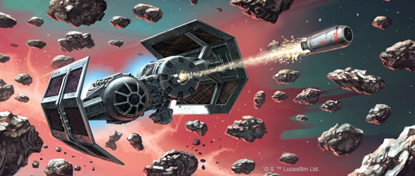
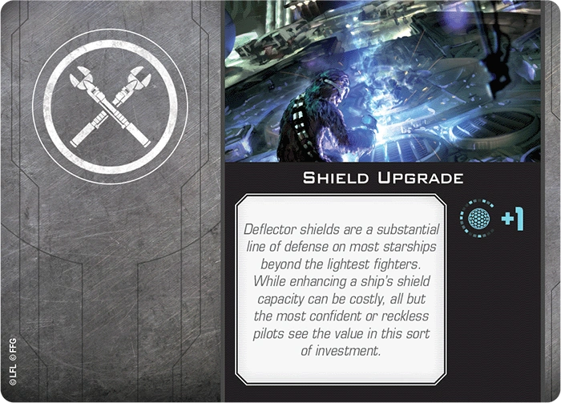
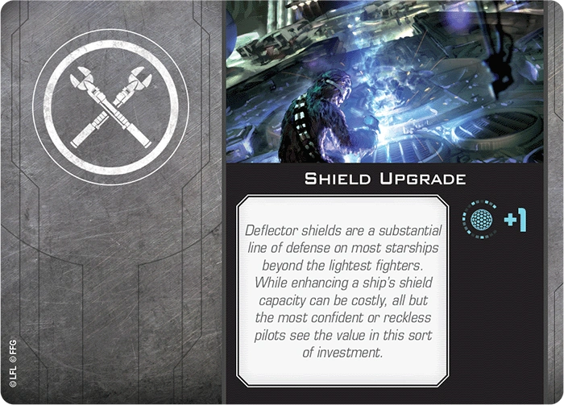

To start playing you will need to acquire the Star Wars XZ-wing 2.0 core set which comes with 1 T65 X-wing and 2 imperial Tie fighters. This will get you the preprinted models, the cards, pilots, obstacles, dials, dice, and other components that you need to start playing. You will also get a copy of the old 2.0 rule book. Since Atomic Mass games over took the production, they came out with a 2.5 rule book you can access online. It's quite extensive and should be used solely for technicalities and specific rule modifications. This webstie contains basoic rules for so you can get right to the action. an updated rule book can also be purchased with the new Rebel or Emperial squadron starter packs.
The Game is played in 5 phases. The 1st phase is the planning phase. Most units only set dials however this is also when players will deided to use ceretain ablilites such as closing s foils for x wings, or dropping a bomb on an un suspecting player. Phase 2 is the systems phase most units skip this phase however there are some upgrade cards and ship units that have abl;ilites that will acitvate them just before phase three. Phase 3 The activation phase. Players with the lowest Initiaitive will move first and then perform and action according to their ablitlies until all ships have finshed moving. Once all ship that can move have done so phase 4 starts. "This is where the fun begins"(Anakin Skywalker). In Phase 4 the ships with the highest initiative will attack first. After choosing a ship to attack the player will then decide which attack to choose primary or special weapons. After the attacker rolls his dice he can modify the roll with certain ablilites. After ward the defender make an evasie roll to defend and modifyes dice with ablitles. This is called nuratlization. When all ships that are in range of an enemy ship in it's firing arc has had a chance to fire the phase ends. Phase 5 is the End Phase. Circualr tokens are removed and some charges recover. If there are still starfighters in the battle zone Then the game continues until 12 phases have been played or there is a victor. This is basic game play. Other advanced senarious such as the Battle of Yavin 4, Battle over Corusant, and others can be purchased in expansions
Each faction has a Loadout of ships specifically designed for that faction and their accompanying pilots, and abilities. Each ship has specified stats. These stats are known as attack value, evading value, and Hull. Some ships come with additional tokens such as shields, force ability, and charges that will also be displayed as a ship's stats. These additional tokens usually come from pilot and ability cards but can occur with ships by themselves. Ships also have a movement dial specific to that ship. This allows you to control the movement of your fleet for each ship and to acquire strategic positions to blast down an enemy.
Pilots are the aces of your fleet. Each has special abilities and specific actions that they can make. Actions are what they sound like. During the action phase, you will be able to perform an action such as focus, target lock, barrel roll, evade, boost, and several others. Pilots will also determine your initiative. An initiative is a special number that determines when a player moves and attacks. Simply put, the lowest initiative will move first while the highest initiative will attack.
Now for upgrade cards. upgrades provide specialized actions that your ship can perform. There are types of upgrade cards: astromechs, ship modifications, talents, force abilities, crew, special weapons (missiles, torpedoes, cannons etc.), illicit, configuration, sensors, tech, and title. Each ship has specific upgrades that they can access and can load up until their loadout points are full.
Through out the game to determine attacks, defenses, and other various chance items we use attack dice and defending dice. Attack dice are bright red and have 4 sides a damage, critical damage, focus, and a blank. defender dice are Green and also have 3 sides, evade, focus, and blank. When attacking the attcker rolls the red dice while the defender rolls the green dice. For each evade icon the defender removes damage icons first and then if there are any more evade icons then the defender can remove any critical damage. if there are any damages or crits remaing the defenig ship takes that damage card. Crits are face up and have nefgative effects. There are many ways that dice may be modified by using pilot and upgrade card ablilties.
Tokens are used to identify various ablilties and effects of a ship. there are 4 tyoes of tokens. Green tokens have positive effects are circular and are removed during the end phase. Orange tokens have negative effects are circular and are removed at the end phase. Blue tokens have poitive effects are squared and remain until specified by the tokens effect. Red tokens have negative ablilities are squared and remian until specified by the effect.
Focus is the primary action choice for all players. If you don't know what action to take it's best to simply focus. This will give your ship a focus token. Focus tokens are used both offesivley and defesnicvley. A focus token is used to modify dice after they are rolled. if a polayer uses a focus token all of the dice with the focus ablity will be turn to hits or evaides givne the situation of the ship. Be warned though a focus action can only be applied once for every token.
Charge tokens are used for certain ablitlies. An ablitly or pilot card will show the number of tokens it requires for the ablilty and how to use that soecific tokens. If a charge has a ^ symbol next to the charge icon on the card the ship may recover 1 charge token. Once a charge is used it fliped over to the red side of the token and shows that it has been used. Notice that the upgrade card Concussion Missiles has 3 charges avaialble to use. also notice that there is no revovery symbol. This means the piolt only has three chance to use this special weaopn before being killed. A wise piolt reserves them for the right moment.
Force tokens are used by force yeilding pilots and usally have a reaccuring symbol. Force token are used to directly modify focus dice roles to either evades or hits. They are also used in specail force abilites. after a force token is used it is fliped over. OIf there is reacuring stymbol then the player may recover one force token per round.
 

Many starfighters have shield capablitiles. Shield tokens show the amount of shields the player has for his or her ship. a shield may also be added throught ablitliy cards such as the shield upgrade card. Shields act as barrier or protection from incoming damage to the hill of a ship. if a ship were to be hit with damage or crit the shield would take the brunt of the damage first before being inflicted damage cards to the ship. Some astromechs like the trustworthy R2_DS can repair shields after they have taken a hit.
Stress tokens are red and limit a ships ablilties. When a pilot is stressed they cannot preform an any red manuvers and they cannot preform and action. Stress token can be removed by preforming an ion manuver any blue manuver on a ships dial. Once a ship preforms one ion manuver they can remove 1 stress token and preform and action. These can also be rmeoved through certain abilities.
Ion tokens are placed on a ship that has been hit with a special attack that uses ion damage. A ship is ionized while it has a number of ion tokens relative to its size: one or more for a small ship, two ore more for a medium ship, and three or more for a large ship. Ion tokens are red tokens meaning they stay with the ship until resolved. A ship that is ionized cannot acquire or maintain locks. WHen a ship becomes ionized it breaks all lock it is maintianing. During the Activation Phase an ionized ship activates as follows: 1. The ionized ship rveals it's dial as normal. 2. During the execute manuver step the ionized ship executes an ion manuever with the same direction shown on its dial. An ion manuever is blue with a speed of 1 banking or moving straight. When ionized the ship can only preform a focus action. If a ship executes an ion manuever it removes all of it's ion tokens

Disarm tokens disable the weapons systems of a ship for 1 round and then are removed. They are palced on ships via abliltiy cards.

Strain and depelete tokens are negative effects that take away 1 dice when attaking or defending. Strain tokens deal with defense while depelete token deal with attack. They are only removed once their effect has taken place or the ship preforms a blue or ion manuver.
A ship gains a cloak token when it has the ablilty to cloak and chooses that as an action. A claoked ship gains 2 agility is disarmed and cannot preform the claok action or gain a second cloak token. During the systems phase, each claosked ship may spend its claok token to decloak. Whena small ship decloaks it must choose one of the following effects: Barrel roll or boost at speed 2. When a medium ship decloaks it uses the boost or barrel template at speeed 1. Decloaking does not count as an action but does count as a move. a ship can declaok even when stressed. if a declaok fails it's mauver it returns to its prior posrion before it attempted the decloak and the decloak token is not removed. A ship cannot drop or launch a device during the same phase that it decloaked.